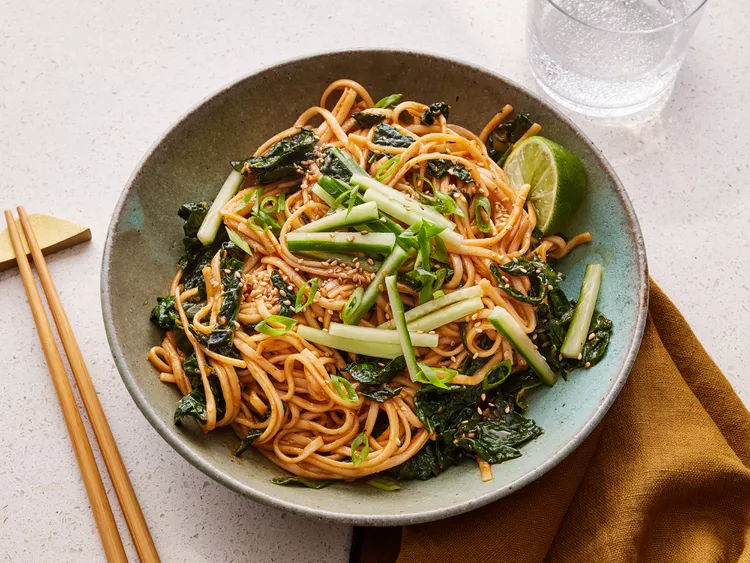

Gochujang Noodles

Description
This simple udon noodle recipe with kale and green onions is flavored with a sweet and spicy gochujang sauce.
Ingredients
- 1 (8 oz package) udon noodles
- 1/4 cup gochujang, or to taste
- 1/2 cup water, divided
- 2 tablespoons soy sauce
- 1 tablespoon maple syrup
- 1 tablespoon fresh lime juice
- 2 tablespoons olive oil
- 1 (10-oz.) bunch dinosaur (lacinato) kale,ribs removed and roughly chopped
- 1/2 cup scallions, divided
- 1 tablespoon garlic, minced
- 1 teaspoon kosher salt
- 1/2 teaspoon freshly ground black pepper
- 1/2 cup matchstick-cut cucumber
- toasted sesame seeds
- toasted sesame oil
- 1/2 lime lime, cut into 4 wedges, for serving
Steps
- Gather all ingredients.
- Bring a large pot of lightly salted water to a boil. Cook udon noodles in boiling water, stirring occasionally, until noodles are tender yet firm to the bite, 10 to 12 minutes. Drain and rinse under cool water; set aside.
- Whisk together gochujang, 1/4 cup water, soy sauce, maple syrup, and lime juice in a bowl. Set sauce aside.
- Heat oil in a wok or large skillet over medium-high until shimmering. Add kale, 1/4 cup of the scallions, garlic, salt, and pepper. Cook, stirring constantly with tongs, until greens are just wilted and tender, and garlic and onions are glossy and almost translucent, about 2 minutes. Add sauce to greens and cook until slightly thickened and darkened in color, about 1 to 2 more minutes.
- Add cooked noodles and cook, until sauce is bubbling where it pools, about 2 to 3 minutes, gradually adding remaining 1/4 cup water, 1 tablespoon at a time, if more sauce is needed to coat the noodles.
- Top with cucumber, remaining 1/4 cup scallions, and sesame seeds. Drizzle with sesame oil and serve warm with lime wedges.